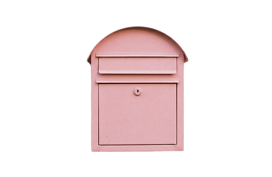

추가해주세요
Project 1. The Letters
안녕! 편지 보내드려요. 이건 제가 멜버른으로 출국하기 한참 전부터 막연하게 생각하고 있던 프로젝트예요. 프로젝트라 하면 거창해 보이는데, 그냥 하고 싶었던 거.
Hi! I’m sending you a letter. This is something I had been vaguely thinking about as a little project long before I left for Melbourne. Calling it a “project” makes it sound much more grand than it really is—it’s simply something I wanted to do.
한국에서부터 줄곧 ‘편지를 쓰고 싶다’는 생각을 했어요. 아주 어릴 땐, 편지를 부칠 일들이 가끔 있었거든요. 펜팔과 관련된 만화책을 읽으며 갑작스럽고 사랑스러운 일이 일어나길 기대한 적도 있었고요. 그런 걸 한참 잊고 살다, 어른이 된 이후론 종종 사랑하는 사람들에게 편지를 부쳐 볼까 싶은 생각이 들 때가 있더라고요. 그치만 바쁘고 정신 없는 일상을 살며 미루고 잊어버리기 일쑤였는데, 멜버른행이 결정되고 나선 이걸 꼭 해야겠다 싶었어요.
Ever since I was in Korea, I’d had this thought that I wanted to write letters. When I was very young, there were times when I actually had reasons to send letters. I forgot all about those things for a long time, but as I grew older, I would sometimes find myself thinking that maybe I should send letters to the people I love. But living through busy and hectic days, I would always put it off and eventually forget about it. Then, when I decided to come to Melbourne, I thought, I really have to do this.
여기서 만나는 사람들은 모두 멋지지만, 한국에서 제게 안정감을 주었던 사람들이 더욱 소중해지기도 하는 요즘이에요. 그래서 이건 멜버른에서 한국으로 보내는 편지입니다. 나에 대해 쓸지, 상대에 대해 쓸지, 우리 둘에 대해 쓸지, 아님 전혀 상관 없는 이야길 할지, 뭔갈 쓸지 아님 그릴지 아무것도 모르겠어요. 그래서 더 기대가 돼요. 비록 두 달이나 지나버렸지만, 더 늦기 전에 제가 꼭 품고 있던 걸 이제 꺼내 놓을게요. 편지 보내드려요!
Everyone I’ve met here is wonderful, but lately, being away has also made me realise even more how precious the people who gave me a sense of comfort and stability back in Korea are to me. So, this is a letter from Melbourne to Korea. I don’t know whether I’ll write about myself, about you, about the two of us, or about something completely unrelated. And that’s what makes me even more excited. It’s already been two months, but before I put it off for any longer, I’m finally going to take out something I’ve been carrying in my heart for so long. I’m sending you a letter!
신청하기
이름과 우편 주소를 남겨주세요.